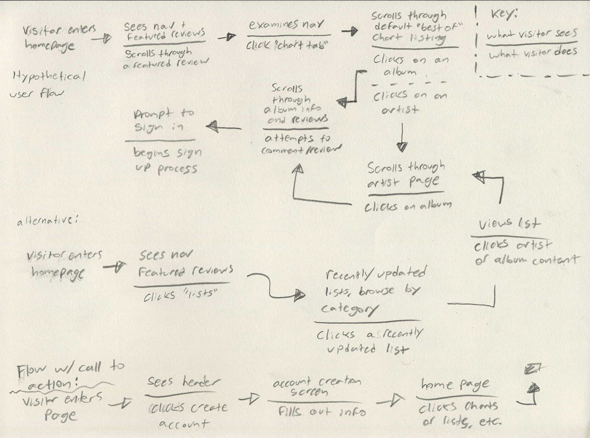
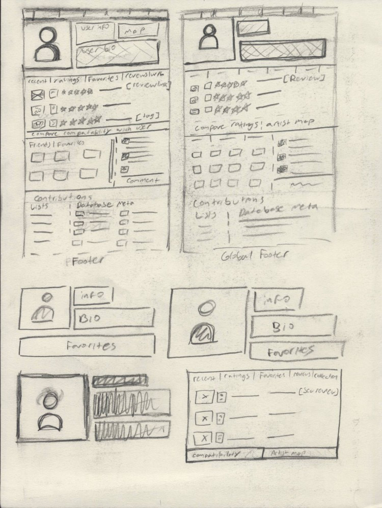

{kind=link}
working towards a better database
rym study and redesign
RateYourMusic.com is a community-built music database run by Sonemic, Inc. The website’s main draw is both is catalog system for albums and its user review and rating system. The site also has forums that cover various music related topics and allows visitors to create their own album lists, which others can view and comment on. In addition, there are a series of auto-generated charts that can be sorted in several different ways; by genre, by year, best of all time, etc. These charts are generated automatically by weighing reviews and ratings. The website is a fantastic way to discover new music and sort through not only artists and albums, but also individual releases like CDs and Vinyl pressings. This is something that RYM uniquely provides. However, the site has some general usability issues revolving around its dated user interface. The website has undergone one major overhaul since it’s initial launch in the early 2000s, and I think it would benefit from another.
The first step of this process is to understand what type of people use this website. Based on several existing user polls done but both staff and website users, I learned that the website has wide variety of users from different age groups and races. As a long-time user of the site, I expected this. It makes sense given the nature of the website’s content. Most people on the site speak English or use the English language setting. The important thing to note, however, is that the website has a lot of “legacy contributors,” people that have been using the site for multiple years, some longer than a decade. This is important to note because these people are intimately familiar with the current layout of website. In such cases, designers need to be cautious when making changes in order to avoid inconveniencing those loyal audiences. Proof of this fact makes itself evident every time Google makes a massive change to YouTube or Gmail’s layout. These contributors have spent hundreds of hours reviewing albums, documenting releases, and discussing music on the forums and it would be awful to lose any of them because of a layout update. I made it a goal to avoid making dramatic adjustments to commonly used UI elements, even if I disagree with them. Another challenge of redesigning a database is that you must maintain the same general structure because information is already recorded by the website in a certain way; if you want to restructure things you can’t make too many changes under the hood without completely breaking what already exists on the site.

With this goal in mind, I sought to identify some of the major issues present on the website. I started where all visitors will likely start: the landing page. The content present on this page is updated automatically; when you refresh the page, you’ll likely see a different set of new releases. The featured reviews are rotated by the staff on a weekly basis. It has operated this way for years and I think it’s a good system. The most pressing issue with the homepage is that visitors don’t get any indication of what the purpose of the site is or why they should explore it. This information is present on the website’s FAQ page, but new visitors will rarely seek out reasons to use a site on their own, especially one that requires a substantial time and knowledge investment. To remedy this issue, I added a header graphic of a record player with a descriptive tagline: “the world’s largest free, community-built music metadata database. discover new music, together.” This communicates the purpose of the side and gives the visitor a reason to stay (discovering new music). There is also a call to action build into this header that prompts the visitor to create an account so that they can contribute to the site. This also gives the website a more concrete and predictable flow for visitors to follow. I also adjusted the nav bar to be larger and have a more traditional logout icon, as the original [x] is not a clear indication that the button is going to log you out. I didn’t make functionality adjustments to the search bar because I believe that it is functional as is.
Ideally, visitors create an account as soon as possible so that they can engage with all the website’s features uninterrupted from that point on. This header not only helps the site feel modern but is more inviting than a wall of text and album covers that visitors might not be familiar with. I sketched some concepts roughly based on the existing layout and thought about what new visitors were going to see on the page and how it should be presented in a way that feels less visually cluttered than the existing website. One obvious solution to the cluttered atmosphere of the website is to add negative space to the site and increase the size of some of the smaller elements. This has two benefits: it looks more visually pleasing and makes all the elements easier to identify and interact with.
The user profile page suffers from similar issues to the landing page visually, as do all the other pages. There is a lot of useful functionalities on this page that the website could communicate more effectively. The icons at the top of the page allow you to interact with the user of that account, which is part of the social aspect of the website. For instance, the “C” button on the profile page lets you see comparisons between your ratings and that profile’s ratings. This is one of my favorite features of the site, but it isn’t obvious what a “C” button does because it isn’t a commonly used element or symbol. In response to these issues, I organized the user profile information and buttons at the top of the page in a way that is more legible and helps you get an understanding of that person’s tastes more easily. I also changed the buttons so that they have more clear icons as well as text that identifies their purpose more clearly.
I moved the confusing and somewhat pointless “artist map” into the space below the review panel of the layout, which also displays the individual’s most recent ratings and stats on how they rate albums. The artist map displays where each of the artists they have ever rated are location in the world, which is a nice function but also not important enough to take up space at the header of the profile page. I instead used the space for the profile image of the account, which is more relevant because it’s one of the primary ways for users to express themselves. I also removed the panel for film reviews on the site, as Sonemic has recently introduced a website completely dedicated to film with more thorough sorting mechanics for that medium. That site is titled Cinemos. I only propose the removal of this element because Cinemos uses the same account logins as RYM, which makes it easy to transfer that information to the other site. Removing the film section of the profile will make the page more concise and relevant to the topic of the site.
For album specific pages, the overall layout is effective at its purpose of displaying ratings and information about an album. As a result, I didn’t make very many adjustments to the content layout itself, but the review dialogue needed a lot of work. Its main issue is that the review guidelines are always visible when the review dialogue is open and that it takes up a lot of space between the title of a review and the body copy text. This is confusing and unnecessary, as this is something most visitors of the site are going to read through once (or not at all) and never need to view again. In addition, the “publish review” checkbox is located right above these guidelines and starts of unchecked. What this usually results in is visitors writing a review and then scrolling back up to make sure it is published to the page. This process is time consuming and odd given how easy it is to move that functionality to the bottom of the element. What I have done to help remedy these issues is collapse the review guidelines into an accordion that starts off open until the profile has 3 reviews, after which it remains closed unless they decide to refer to it by choice. I also moved the “publish your review” checkbox to the bottom of the element, near the preview, save, and cancel buttons. The cancel button is now red and smaller than the other buttons so that it contrasts with them more. This helps prevent people from accidentally clicking on it. If you do click cancel, it deletes your review, which isn’t something that should happen by accident. I would also suggest that cancelling a review shoud require a confirmation modal.
For this project, I maintained a process of problem identification, user flow creation, sketching, and prototype creation. I feel like I was a good fit for this project because I am a frequent and longtime user of this site, so I have a good feel for what its legacy contributors view as “core features” and what people are expecting from the service. Like I mentioned in the introduction, I didn’t feel like I should make total overhauls to the design in every instance. For a project like this, it’s important to consider a redesign’s impact on the people who have been interacting with the site for years; people generally don’t like change and it’s important to soften the blow that a full redesign will have on the existing userbase.
Despite RYM’s huge amount of functionality and the purpose it serves to music nerds, its user interface acts as a barrier to new users that must overcome. There are other major usability issues with the site that I could go over more thoroughly as well, such as the fact that a lot of the website is not responsive to varying screen sizes; using this site on a mobile device is a nightmare due to the size of the buttons/text not changing enough to fit the platform. However, these issues are again the result of the antiquated site design. I believe that Sonemic were to resolve these issues that they would find a wider user base. The company has gotten much better at creating good user experiences with its newer sites for film and for video games, so I believe that they are aware of many of these problems. The next step of this process is to iterate on the website and begin refining the user experience to make it as smooth as it can be and then pitch some of the ideas to Sonemic staff themselves, who are currently developing a mobile app for RYM.
Now that you're done reading, maybe you should listen to Station to Station? Like I mentioned earlier, it is Bowie's best album.
— Justice